人は色を見て意味を感じ取ることがあります。
黄色を見たとき
たとえば、赤や
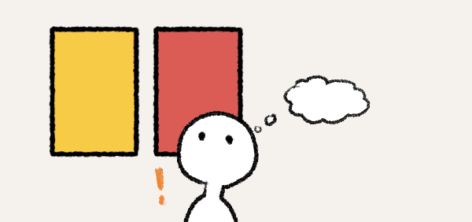
注意！危ない！と感じることはありませんか？
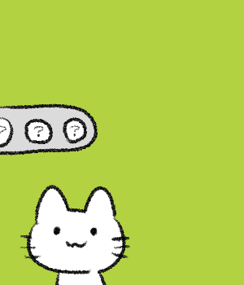
たとえば信号機を見てみましょう
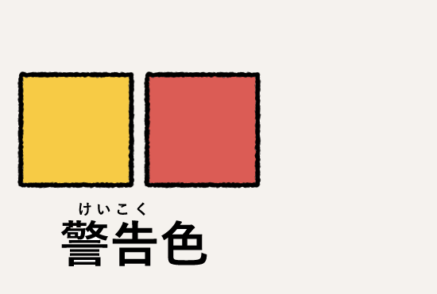
この色は警告色とも呼ばれる色です
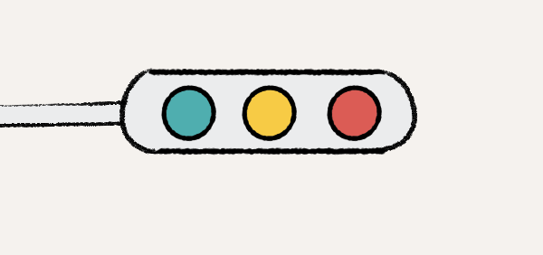
赤は「止まれ」、黄色は「注意」、青（緑）は「進め」ですよね。
人が「赤＝危険」「黄色＝注意」というように、色に意味をつけています。

このように危険などを知らせる色は自然界にもあります。
たとえば毒を持つハチやへびは赤や黄色、黒の強い色を体に持っています。
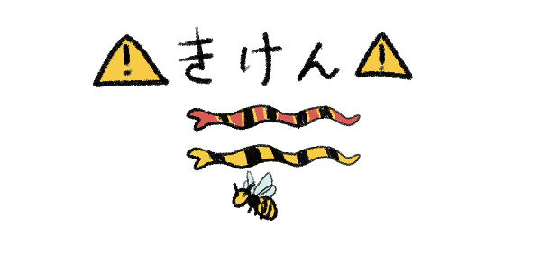
人はそれを見て「さわると危険」「近づかないほうがいい」と覚え、
この色が“危険のサイン”として広まりました。
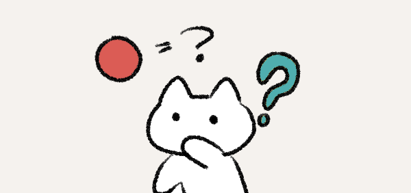
しかし、ねこは赤＝危険のように
色に意味を持たせているのでしょうか？
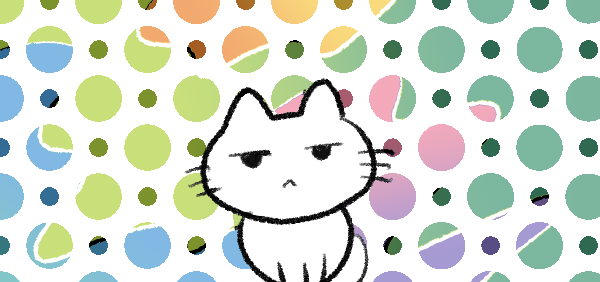
ねこは人間ほどたくさんの色を見分けることができません。
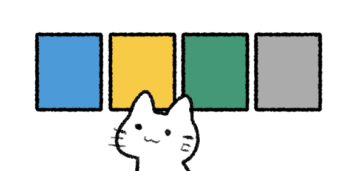
ねこがはっきり見えるのは青・黄色・茶色が中心です。
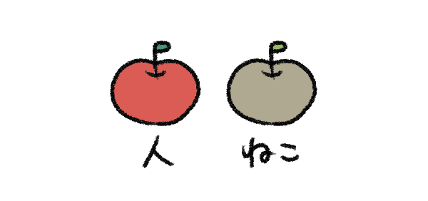
そのため、信号の赤や、カエルのあざやかな赤・オレンジなどは、
ネコにはくすんだ灰色や茶色のように見えています。
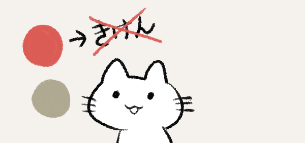
つまり、ネコにとって「赤は危険」「黄色は注意」という意味は通じないのです。
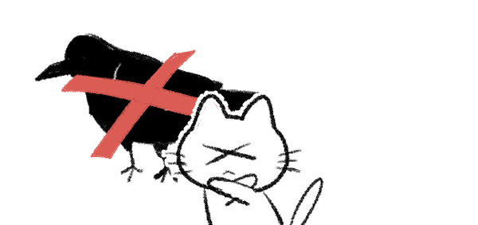
ただし天敵であるカラスのような黒く光るものをこわがることもあります。
ねこは見える色が少なく、危険を判断するときは匂いや音が重要になるようです。
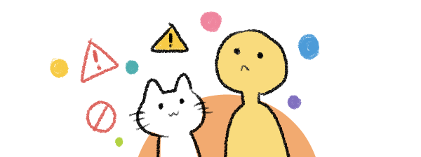
私たちが警告色として色を見ているのは、
実は人ならではの感覚でもあるかもしれません。